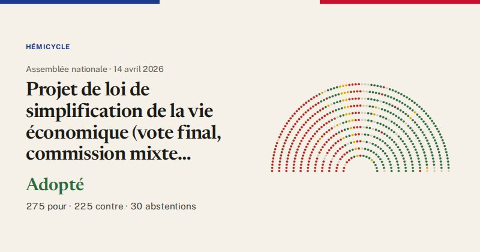

Assemblée nationale · scrutin n°6184 · 14 avril 2026
Projet de loi de simplification de la vie économique (vote final, commission mixte paritaire)
Adopté
275pour
225contre
30abstentions

Le vote de chaque groupe
| Groupe | Pour | Contre | Abst. | Membres |
|---|---|---|---|---|
| La France insoumise (LFI-NFP) | 0 | 68 | 0 | 71 |
| GDR (communistes) | 0 | 13 | 0 | 17 |
| Écologiste et Social | 0 | 38 | 0 | 38 |
| Socialistes et apparentés | 0 | 67 | 1 | 69 |
| LIOT | 9 | 4 | 4 | 22 |
| Ensemble pour la République | 25 | 30 | 19 | 91 |
| Les Démocrates (MoDem) | 25 | 2 | 2 | 37 |
| Horizons & Indépendants | 32 | 2 | 0 | 35 |
| Droite Républicaine | 43 | 0 | 3 | 48 |
| UDR (Union des droites) | 17 | 0 | 0 | 17 |
| Rassemblement National | 118 | 0 | 1 | 121 |
| Non-inscrits | 6 | 1 | 0 | 11 |